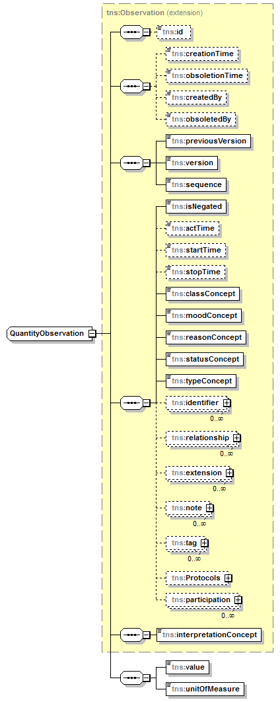

| diagram |  | ||||
| namespace | http://openiz.org/model | ||||
| type | extension of tns:Observation | ||||
| properties |
|
||||
| children | tns:id tns:creationTime tns:obsoletionTime tns:createdBy tns:obsoletedBy tns:previousVersion tns:version tns:sequence tns:isNegated tns:actTime tns:startTime tns:stopTime tns:classConcept tns:moodConcept tns:reasonConcept tns:statusConcept tns:typeConcept tns:identifier tns:relationship tns:extension tns:note tns:tag tns:Protocols tns:participation tns:interpretationConcept tns:value tns:unitOfMeasure | ||||
| used by |
|
||||
| source | <xs:complexType name="QuantityObservation" mixed="false"> <xs:complexContent> <xs:extension base="tns:Observation"> <xs:sequence> <xs:element name="value" type="xs:decimal" minOccurs="1" maxOccurs="1"/> <xs:element name="unitOfMeasure" type="wsdl:guid" nillable="true" minOccurs="1" maxOccurs="1"/> </xs:sequence> </xs:extension> </xs:complexContent> </xs:complexType> |
element QuantityObservation/value
| diagram |  |
||
| namespace | http://openiz.org/model | ||
| type | xs:decimal | ||
| properties |
|
||
| source | <xs:element name="value" type="xs:decimal" minOccurs="1" maxOccurs="1"/> |
element QuantityObservation/unitOfMeasure
| diagram | |||||||
| namespace | http://openiz.org/model | ||||||
| type | tns:guid | ||||||
| properties |
|
||||||
| facets |
|
||||||
| source | <xs:element name="unitOfMeasure" type="wsdl:guid" nillable="true" minOccurs="1" maxOccurs="1"/> |
XML Schema documentation generated by XMLSpy Schema Editor http://www.altova.com/xmlspy